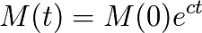
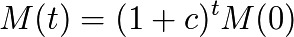
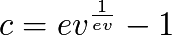
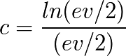
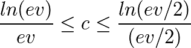

Solutions
Une symétrie spatio-temporelle (l’application du principe de Relativité) est donc nécessaire, qui permette une circularité des échanges de valeurs, assure une continuité dans le temps, soit non discriminatoire au sein du référentiel spatio-temporel, prenant en compte présent et futur et qui pourtant limite aussi la quantité de monnaie afin qu’elle garde à la fois de la stabilité et un potentiel d’échange non nul.
Est-ce seulement possible ? Oui !
Comme nous allons le voir, non seulement les classes de solutions sont parfaitement déterminées mais on peut trouver une solution optimisée.
a) Classes de solutions
Les solutions de création monétaire respectant les symétries spatio-temporelles impliquent donc pour la masse monétaire « M(t) » choisie par les acteurs un crédit mutuel (pas une dette) mathématique, donc sans dimension et non liée à une valeur spécifique.
Les conditions de symétrie et donc de liberté, vont nous permettre d’établir les équations différentielles qui sont nécessaires pour la détermination des solutions du problème des trois producteurs.
Une symétrie spatiale
Aucun référentiel / individu présent à l’instant « t » n’est privilégié quant à la création de nouvelle monnaie. Nous obtenons donc à « t » constant :

dM représente la variation de monnaie, et dx la dimension spatiale et donc étant donné les définitions données dans les chapitres précédents le passage d’un individu à un autre.
Nous faisons ici référence à une notation et un raisonnement de physicien, mais nous aurions pu tout aussi bien noter dans une notation plus mathématique :

Chacun pourra ainsi mieux comprendre la symétrie spatio-temporelle invoquée ici selon son référentiel de notation et de raisonnement habituel.
Une symétrie temporelle
Toute génération est semblablement établie économiquement pendant toute sa durée de vie limitée « ev ».
Aucune génération n’est à privilégier dans le temps. L’ensemble des individus positionnés au temps immédiatement suivant « t+dt » doit être crédité d’une part relative de monnaie au même titre et dans le même rapport relatif que les individus positionnés au temps « t » et donc en notation continue :

Ou encore en approche discrète (dt = 1 unité de temps) :

« c » représente donc le rapport relatif ou encore la variation relative de monnaie pendant une petite unité de temps « dt » (nous verrons plus loin ce que signifie « petit » dans notre raisonnement, quand nous aborderons la notion d’espérance de vie).
La quantité relative de monnaie créée doit donc être relativement constante en tout temps, respectant de ce fait la symétrie temporelle et permettant la participation des individus de toutes les générations au même système monétaire en respectant ainsi les trois libertés économiques et le principe de relativité dans tout l’espace-temps considéré.
Ce qui fait que le problème des trois producteurs est résolu par une seule classe de solutions possible. Ce sont les solutions exponentielles (ou fonctions « puissance ») :

Ce qui s’écrit aussi en puissance de (1+c) sous la forme :

Concrètement cela signifie donc que pour les solutions cohérentes avec les trois libertés économiques et le principe de relativité, chacun des N(t) acteurs de la zone économique existants à une date « t » est donc émetteur d’une même part relative de monnaie, un « Dividende Universel » (DU) qui vaut :

Autrement dit : la croissance « c » de la masse monétaire « M » est relativement stable et répartie symétriquement entre l’ensemble des acteurs présents et à venir. Ces solutions à Dividende Universel assurent le respect du principe de relativité. La densité de la monnaie est assurée en tout temps et en tout point, évitant ainsi les extrêmes de sécheresses monétaires (sources de déflation), autant que les extrêmes de l’excès de monétisation (sources de bulles locales ou d’hyperinflation).
La monnaie est créée de façon continue en cohérence avec le remplacement continu des générations et la croissance de la masse monétaire choisie, « c » est attribuée équitablement dans l’espace (ensemble des individus) à l’instant « t » quel que soit « t », ce qui est la seule façon de ne pas léser les acteurs économiques tant présents que futurs, que l’on peut aussi nommer « flux des individus ».
C’est donc bien le facteur d’espace-temps, et plus exactement la dimension temporelle, (générationnelle), liée à la durée limitée de la vie des individus, qui change la nature de la définition de la monnaie. Il s’agit donc d’éviter l’erreur fondamentale de considérer l’ensemble des acteurs en tant que quantité « permanente ». Comprendre qu’il s’agit d’un flux d’individus en continuel renouvellement, et que dans ce flux il n’y a aucune raison de privilégier aucun d’entre eux vis-à-vis de la création monétaire dans l’ensemble de l’espace-temps économique ainsi déterminé.
{kind=link}
(Luc Fievet TRM 2.0)
« c » est le facteur de Dividende Universel, il représente bien une part de la masse monétaire totale existante à l’instant « t », créée pour chacun des membres. Cette part monétaire leur permet d’échanger leurs biens et services dans une mesure indépendante de la création monétaire antérieure. Cette même part doit être suffisamment petite pour garder à la monnaie préexistante une valeur stable.
Il serait erroné de comprendre ici que la masse monétaire se devrait d’être « une exponentielle ». Nous n’avons traité que le cas théorique des trois producteurs, parfaitement remplacés dans l’espace-temps. Aussi on ne doit garder plus généralement que le résultat fondamental instantané, à savoir un dividende universel, dont nous allons maintenant établir les valeurs limites et cohérentes d’encadrement.

En vert sont marquées les naissances, en rouge les décès des individus, l’axe vertical étant le temps (Luc Fievet TRM 2.0)
b) Optimisation et espérance de vie
Il est possible de trouver une relation fondamentale entre le Dividende Universel « c » et l’espérance de vie. En effet, considérons tout d’abord pour simplifier une zone économique composée de N(t) membres avec N(t) stable dans le temps et ayant une espérance de vie moyenne « ev ». Observons tout d’abord comment la génération existante se positionne vis-à-vis du flux entre les générations déjà mortes et celles qui viennent à naître.
Si l’on imagine maintenant qu’une unité de temps passe, on doit aussi voir comment les individus les plus proches de « ev » passent de vie à trépas et ceux non encore nés mais proches de naître viennent à l’existence, ainsi que le passage d’une coordonnée de temps à la suivante de tous ceux qui restent en vie.

En vert les générations vivantes à « t ». On doit voir et comprendre sur ce schéma la hauteur temporelle d’existence « ev » et son centre de symétrie « ev/2 »
Pour se donner une analogie, cela peut faire penser à une fontaine qui semble toujours la même vue de loin bien que ses gouttes d’eau disparaissent de proche en proche dans le temps passant des positions de celles qui sont en projection initiale à sa base à celles qui retombent dans le bassin. Il faut un temps donné (l’espérance de vie) pour que la goutte d’eau effectue l’ensemble de ce « trajet de vie » en parcourant l’ensemble du jet d’eau, qui lui semble immuable.
{kind=link}
Une fois cette observation comprise et intégrée avec les résultats précédents, nous pouvons donc poser comme relation fondamentale que la création de la masse monétaire durant toute l’espérance de vie passée ne doit être représentée à « t » vis-à-vis de la masse monétaire existante que par la petite fraction des individus de cette génération presque totalement disparue mais encore présente dans la hauteur temporelle en proportion de 1/ev.
Il nous faut donc établir que :

Ce qui implique :

Ce qui nous donne pour c :

« c » étant petit on démontre mathématiquement (développement limité) que cela peut aussi s’écrire :

Ou plus simplement :

Ces trois dernières expressions (E1), (E2) et (E3) étant équivalentes.
Comme nous l’avons remarqué précédemment on ne peut se satisfaire complètement de cette valeur car le centre de symétrie temporel est placé à ev/2 et pas à ev. Il s’agit donc ici d’une valeur minimale pour c, qui va dans le sens de l’avantage pour les générations sortantes (pour les plus âgés). Le même raisonnement pour « ev/2 » nous donne donc une valeur en accord avec la symétrie centrale :

À noter que le choix de l’unité de temps pour le calcul n’est pas neutre, car il est en rapport avec le rythme du déploiement du dividende universel sous sa forme quantitative dans l’économie. Et ce rythme n’est pas neutre économiquement. Nous choisissons donc l’année comme unité économique fondamentale du fait des données expérimentales qui donnent à l’année solaire un rythme économique fondamental du fait notamment des récoltes annuelles, mais aussi des congés.

La génération marquée ici en bleu ne représente plus que 1/ev de l’ensemble des vivants, a participé à la création monétaire de la génération précédente pour M(t) durant son existence alors que la masse monétaire en vigueur est M(t+ev)
On pourra remarquer que la monnaie étant quantitative sous sa forme utile, l’aspect continu n’étant qu’apparent (cf. l’analogie de la fontaine), le Dividende Universel calculé sera bien finalement quantitatif. Le fait donc d’avoir des bornes de valeurs relatives est parfaitement adapté à un DU stable quantitativement et qui n’est recalculé et revalorisé que lorsqu’il « menace » de sortir des bornes limites acceptables pour sa valeur relative. Cette remarque est importante et il faut y réfléchir profondément. C’est ce qui permet à un projet de monnaie libre compatible avec la TRM (comme OpenUDC/uCoin) d’utiliser une règle fondamentale très simple et très lisible qui arbitre perpétuellement entre valeur quantitative et valeur relative.

Au bout de 80 unités de temps, la génération précédente représentée par 1 à t = 0 ne représentera plus que 1/80ème de la monnaie existante
Conclusion
On peut maintenant conclure de façon complète que le résultat fondamental de la TRM est :
Les systèmes monétaires compatibles avec le principe de relativité et les trois libertés économiques sont les systèmes monétaires à dividende universel dont la valeur est une proportion « c » de la masse monétaire qui dépend de l’espérance de vie moyenne de la zone monétaire considérée sous la forme :

La contraposée est donc aussi un résultat fondamental de la TRM :
« Les systèmes monétaires qui n’intègrent pas un dividende universel ne sont pas compatibles avec le principe de relativité et les trois libertés économiques »
On pourrait aussi rajouter pour préciser mieux encore qu’un dividende universel qui existerait mais qui serait trop faible ou trop fort, donc en dehors des bornes ainsi définies, sur une trop longue période, avantageant ainsi une génération sur une autre (entrante ou sortante, peu importe !) ne serait pas non plus compatible avec la TRM.
Ce dernier point est fondamental car la tentation est grande pour les vivants de s’arroger des droits de propriété excessifs sur l’espace de vie, violant ainsi les libertés de leurs successeurs. L’histoire est pleine de ces violations des principes fondamentaux, qui conduisent inévitablement à des insurrections à terme.
On pourra retenir que Le Dividende Universel optimisé est quasi inversement proportionnel à l’espérance de vie de la zone économique considérée (ln étant une fonction qui varie très peu).

Valeurs acceptables (en bleu) du % du dividende universel en fonction de l’espérance de vie En dessous de la zone coloriée un dividende trop faible aura tendance à favoriser les sortants, tandis qu’au dessus un dividende trop élevé aura tendance à favoriser les entrants
Ces résultats concluent notre développement théorique principal.